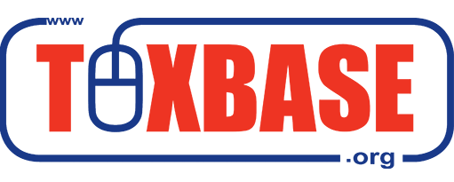

TOXBASE (www.toxbase.org) is the primary clinical toxicology database of the NPIS and is a first-line resource for UK healthcare professionals providing information on the routine diagnosis, treatment and management of poisoning. There are over 17,000 monographs covering exposure to a wide range of pharmaceuticals, chemicals (agricultural, household and industrial), plants and animals. The database also provides information on poisoning in pregnancy, harmful chemicals, chemical incidents, antidotes and antivenoms in addition to being a training and educational resource.
TOXBASE is free of charge to UK National Health Service departments and practices, and also to UK military healthcare units, and Emergency Departments and Public Health Units within Ireland. TOXBASE online is also available by annual subscription to overseas healthcare units and poisons information centres.
The TOXBASE database is coordinated by the NPIS (Edinburgh Unit), though all four NPIS Units contribute to its content which is updated on a regular basis to ensure this key resource remains up-to-date and relevant. In addition to the online website, a TOXBASE app is now available for download onto iPhone and Android devices. The app is free for NHS subscribers and has the added benefit of being available offline. For more information TOXBASE app.
The NPIS recommends users should consult TOXBASE before telephoning the service for more expert and specific advice.
To register for TOXBASE please submit an on-line registration form by clicking on the icon below:

Suitable commercial users are charged an annual subscription, and overseas and other non-NHS users may be allowed access by negotiation, subject to UK Health Protection Agency approval. TOXBASE is not available for public access.
The National Poisons Information Service (NPIS) is currently undertaking a stakeholder questionnaire assessing the accessibility and usefulness of the Annual Report.
Please complete a brief survey at the following link by clicking here
If your unit has an account for TOXBASE online you can use it to log in using your phone's browser. However, you might prefer to use the TOXBASE app, which is now available to download from the iOS and Android app stores.
After downloading the TOXBASE app to your phone or tablet, users create a personal app account by completing the registration form on the sign-in screen and then clicking a link in an activation email.
The app is FREE for those who register using their NHS/PHE/MOD email (£6.99 for other users). You can choose your own username+password linked to your personal email (no need to remember your unit's login). You can even access the TOXBASE app offline (accessing regularly via 3G/4G/wifi is recommended to receive updates).
A leaflet about the TOXBASE app is available.
Click below to go directly to the TOXBASE app in store: